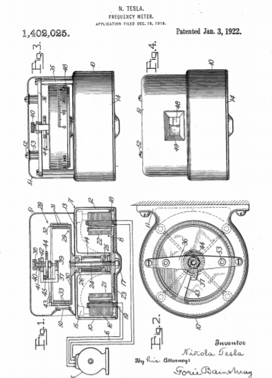

Descarga la patente original en esté enlace


Que se sepa que yo, NIKOLA TESLA , ciudadano de los Estados Unidos, que reside en Nueva York, en el condado y en el estado de Nueva York, he inventado ciertas mejoras nuevas y útiles en los medidores de frecuencia, de las cuales la siguiente es una , descripción clara y exacta.
En muchos casos, en la práctica, es muy deseable e importante determinar la frecuencia de corrientes periódicas u oscilaciones eléctricas y, a partir de ellas, la velocidad de rotación o movimiento alternativo del aparato generador o controlador.
Los dispositivos comúnmente utilizados en la actualidad para este propósito y denominados "medidores de frecuencia" generalmente consisten en lengüetas o barras sintonizadas para responder a impulsos de períodos definidos, o una dinamo de corriente continua acoplada al generador alterno o controlador de frecuencia y conectado con un instrumento, de construcción de voltímetro, graduado para indicar la frecuencia instantánea de la corriente. Ambas formas son objetables desde muchos puntos de vista, ya que están sujetas a diversas limitaciones de disponibilidad práctica ya influencias perturbadoras, todas tan bien conocidas por los expertos como para prescindir de la necesidad de ampliarlas en esta ocasión.
Mi invención tiene por objeto proporcionar un medidor de frecuencia de gran precisión, simplicidad estructural, amplio rango de uso y bajo costo, todo adecuado para satisfacer la demanda urgente de un instrumento comercial y científicamente satisfactorio de forma mejorada.
En los dibujos, en los que he ilustrado una única realización de mi invención con fines de divulgación, la figura 1 es una sección vertical central a través del medidor de frecuencia, con una extensión esquemática para indicar una forma disponible de conectarlo a un generador de dos fases, la figura 2 es una vista desde un extremo.
La figura 3 es un alzado lateral con la cubierta en sección, y la figura 4 es un alzado lateral del instrumento desde su lado de lectura.
Se entenderá que la construcción específica de los instrumentos que incorporan mi invención puede modificarse de muchas maneras de acuerdo con las demandas del entorno eléctrico o mecánico en el que se utilizará, y aunque describiré en detalle una construcción específica, ilustrada en el dibujo, no tengo la intención de limitar mi invención en sus aspectos más amplios a cuestiones de detalle 5 representa esquemáticamente un generador bifásico, tipificando la máquina que controla la frecuencia a medir, y que tiene una conexión adecuada mediante cables 6 con el elemento de motor síncrono del medidor de frecuencia, indicado en su conjunto por 7. El motor, 8, por supuesto, tienen polos de campo y barras de armadura apropiadas para el carácter de la corriente suministrada desde el generador 5, siendo el motor de fase dividida, bifásica u otro tipo, según sea necesario. Un marco 10, que tiene orejetas 11, u otros medios de soporte, proporciona una carcasa 12 en forma de copa con una pared superior 13 provista de un tubo de apoyo central 14 y con medios de soporte adecuados, como 15, para la estructura de campo estacionaria 16. A tapa 17, rosca a 18 y embalada adecuadamente,
Para precisión y rapidez de respuesta a las variaciones de frecuencia, la estructura del inducido 21, en su conjunto, con sus accesorios debería ser muy ligera y estar equipada de modo que su trabajo se reduzca al mínimo. Por tanto, es importante tanto que la construcción del elemento de armadura se diseñe con referencia a la pequeñez y la consiguiente ligereza de las piezas, como que su equipo indicador de frecuencia sea de un carácter que imponga la carga más ligera sobre la armadura. Concretamente, las láminas de inducido 22 se llevan sobre un disco de luz 23, fijado al eje vertical 24, de modo que está soportado por cojinetes de bolas 25 y 26, en el tubo 14, y, por encima de la pared 13, lleva el miembro impulsor del indicador. dispositivo 28. Este aparato comprende, como su elemento principal, 29, un disco no magnético 30, de latón, digamos, que tiene paredes concéntricas 31 espaciadas anulares, y como su elemento secundario, 32, una parte pivotante que incluye paredes anulares muy ligeras 33 intercaladas con las paredes 31 y que proporciona superficies extensas de fricción suave, muy cerca, pero sin contacto con, las superficies afines del elemento primario de modo que a través de las películas delgadas de fluido, preferiblemente aire, que intervienen entre ellas, el par puede transmitirse desde el elemento primario al secundario en proporción sustancialmente lineal a la velocidad del primario. Los postes 35, montados en la pared superior del bastidor, sostienen una pieza de puente 36 que lleva un yugo de apoyo 37, proporcionando los cojinetes joya superior e inferior 38 y 39, el primero contenido en un casquillo 40 roscado para ajuste en el yugo y fijado por una tuerca 41, recibiendo tales cojinetes el husillo 42 desde el cual se extiende, rígidamente, llevando el brazo 43 las paredes anulares del elemento secundario. Un resorte en espiral 44, fijado en un extremo al eje 42 y en su otro extremo sujeto de forma ajustable en el espárrago partido 45 en el soporte 37, permite el desplazamiento giratorio del elemento secundario, sustancialmente en proporción lineal a la fuerza aplicada. Una escala 48, impresa o fijada de otro modo a la pared más externa del elemento secundario, está graduada en unidades de frecuencia y su punto de indicación está determinado por un puntero fijo 49 que se fija en el borde de una ventana transparente sellada 50 de la carcasa. carcasa 51 de formación de copa, que está asegurada en relación sellada a la pared 13 por medio de tornillos empaquetados 52 que encajan con protuberancias 53 en la pieza de puente 36 para completar el cerramiento hermético de la cámara que contiene los elementos indicadores.
En mi solicitud pendiente número de serie 841.726 presentada el 29 de mayo de 1914, patente número 1.209.359, he establecido en detalle ciertas leyes cuya observancia da como resultado el logro de una rigurosa proporcionalidad de las deflexiones a la velocidad en un instrumento de de tales condiciones puede observarse ventajosamente al construir el elemento indicador del medidor de frecuencia.
Se observará que un instrumento como se describe en este documento tiene muchas ventajas estructurales y operativas. El instrumento de traslación, que proporciona la lectura de frecuencia, cuando se construye para el uso de aire como medio de transmisión, puede ser de tamaño suficiente para dar un par de torsión amplio, pero si se desea, el mecanismo ensamblado puede operarse en aire u otros gases, preferiblemente inertes, de más que la densidad atmosférica para aumentar el par. El instrumento de arrastre de aire no se ve afectado sustancialmente en precisión por los cambios de temperatura, sin un mecanismo de compensación especial y, por lo tanto, es prácticamente insensible al efecto de calentamiento del motor subyacente, y la construcción de doble cámara que segrega el motor y el dispositivo de traslación evita que este último se vea afectado. por las corrientes de aire engendradas por el funcionamiento del motor. Además, la estructura del indicador puede hacerse inmune a la influencia magnética y a las corrientes parásitas, aunque sean intensas, haciendo que su elemento secundario sea de material aislante no encogible apropiado, como fibra comprimida, aunque en muchos casos la partición 13, que actúa como un escudo para el indicador, obvia la necesidad de tal disposición. Son especialmente deseables el tamaño pequeño, el bajo costo y la facilidad de mantenimiento, debido a la simplicidad de la construcción.
Lo que reclamo es:
Fechado el 3 de Enero de 1922.
Nikola Tesla.